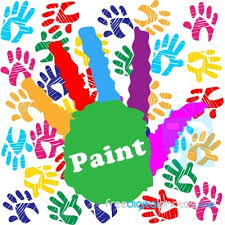

Copilaria este un privilegiu, este frumoasa perioada cand cel mic vrea sa se faca mare si tot ce e nou il atrage. Prin arta plastica copilul invata cum sa creasca frumos si sa se exprime, se descopera pe sine, socializeaza si isi face prieteni noi. Un mod placut, distractiv si benefic de relaxare dupa o zi grea de scoala.
Cursul nostru de pictura si desen are o structura complexa bazandu-se pe invatarea desenului si/sau a picturii STEP by STEP. Propune familiarizarea copilului cu tehnicile de lucru, redarea volumelor si a perspectivei, compunerea spatiului plastic, raportul dintre obiecte, forma si materialitatea lor, raportul valoric si expresivitatea cromatica. Daca prefera doar desenul, doar pictura sau pe ambele, in cadrul orelor de curs va fi indrumat in functie de preferintele sale.
- Frecventa: saptamanal (1 sedinta pe saptamana) / 90 min
- Pret: 280 lei/modul 4 sedinte
- Orar: Luni : 18:30 - 20:00 (Grupa I), Marti : 18:30 - 20:00 (Grupa II)